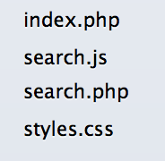
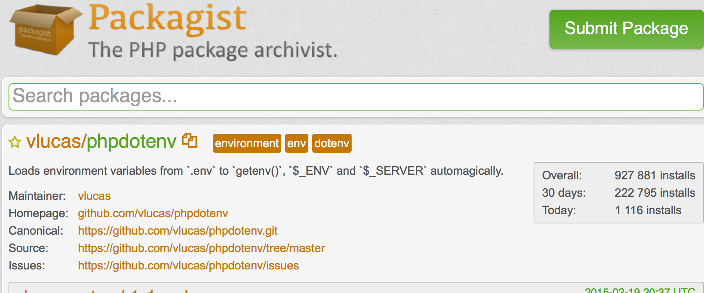

Managing Website Dependencies
Composer, Bower, and You!
Wun Chiou / wun@utdallas.edu
Web Software Developer
UT Dallas / Research
Solution: a Password Manager
(LastPass, OnePassword, and etc.)
Website Complexity
1997
- tables
- frames
- CGI
2015
- HTML5
- CSS3
- JavaScript
- PHP, Rails, ASP.NET, JSP, Node, and etc.
- jQuery, Angular
- Bootstrap, Foundation
- Monolog, Guzzle, Swiftmailer, Symfony, Laravel
- WordPress, Drupal, Joomla
Github
> 6 million repositories
Packagist
(PHP)
~60,000 packages
Bower
(HTML / CSS / JavaScript)
~26,000 packages
(note: check the license)
Traditionally
Search > Download Zip > Project
Solution: a Dependency Manager
Example Project
LDAP lookup of UTD People
- basic page
- secure LDAP connection info
- connect
- search
- make pretty
Step 1: Basic Setup
PHP Dependencies
Step 2: Hiding credentials / configuration with phpdotenv
Composer
getcomposer.org
a PHP dependency manager
“composer search phpdotenv”
“composer require vlucas/phpdotenv”
LDAP
Step 3: Pull in a PHP LDAP package
“composer require adldap2/adldap2”
Step 4: Code the search
Front-End Dependencies
Step 5: Make it pretty with Bootstrap

bower.io
a Front-End dependency manager
“bower init”
“bower search bootstrap”
“bower install bootstrap --save”
Advantages
- SoC: Separation of Concerns
- Efficiency: Save time coding, installing, configuring, upgrading
- Accountability: Control over component sources & versions
- Reusability: Shared common resources
- Maintainability: Simplified version control
Possible Pitfalls
- Extra tools (composer, bower) required
- Look at the code
- Dependency integrity
- Dependency longevity
- Added complexity
- Proper fit for the need